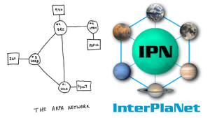

Courses
Courses taught at BITS, Pilani -- KK Birla Goa Campus, India (2012–2018), and RVR & JC College of Engineering, India (2005–2012).
Internetworking Technologies (CS F413)

II-Semester, 2017-18 | II-Semester, 2015-16 | II-Semester, 2014-15
Internetworking Technologies is an advanced elective designed as a finishing course for final-year undergraduate students with a strong interest in data networks and systems engineering. The course was rebuilt from the ground up upon joining BITS Pilani – Goa Campus in 2012 to reflect the depth and practical orientation expected of a senior-level offering. Topics span the full network stack: Ethernet and LAN switching, IP addressing and subnetting, routing protocols (RIP, OSPF, and BGP), VLAN design, network address translation, transport-layer congestion control, and application-layer protocols including DNS, DHCP, and HTTP. Upper-layer concerns such as network security fundamentals, quality of service, and software-defined networking are woven into the later parts of the course to give students a forward-looking perspective on modern network architectures.
The course is structured around lectures, a wiki-based reading programme, a substantial semester project, lab sessions (in the 2015–16 and 2016–17 editions), and two written tests. Students are expected to engage with primary sources — RFC standards, research papers, and textbook chapters — and produce both written analyses and working implementations. The project component, which grows from a design exercise in earlier semesters to a full implementation challenge in later ones, requires teams to apply routing, addressing, and protocol concepts in a realistic network scenario.
Testimonials from students:
- "[Internetworking Technologies is] One of the best courses I've ever taken. The efforts the instructor takes to make the course engaging are unparalleled. The projects were very interesting."
- "Internetworking Technologies is the best course I have taken at BITS, Pilani - KK Birla Goa Campus by far. The best part was that I got to learn a variety of interesting and practical things in this course. Everything about this course is almost perfect."
- "I took Internetworking Technologies as an elective in 4-1 (semester-7). Apart from an interesting course structure, the course was handled really professionally. The best thing about the course was its stress on various upcoming technologies and data center architectures. There was a lot of emphasis on applying the theory learnt in practical scenarios, through interactive assignments. The course also involved study of research papers in contemporary field, which in itself was a learning experience. All in all, it was a great course, though it requires a certain amount of effort by the student."
Object Oriented Programming (CS F213)
I-Semester, 2017-18 | I-Semester, 2016-17 | I-Semester, 2015-16
Object Oriented Programming (OOP) is one of the flagship second-year courses in the computer science curriculum at BITS Pilani – Goa Campus, consistently enrolling around 220 students per semester. The course establishes the conceptual and practical foundations of object-oriented design using Java: classes and objects, encapsulation, inheritance, polymorphism, abstract classes, and interfaces. Beyond language mechanics, the syllabus was substantially expanded to include software engineering practices directly relevant to industry: version control workflows, unit and integration testing, design patterns (creational, structural, and behavioural), refactoring techniques, and an introduction to agile development practices. Lecture content is reinforced through weekly lab sessions, quizzes, a wiki, and a discussion forum, ensuring that conceptual material is promptly translated into working code.
A defining feature of the course is its project component, in which student teams plan, build, review, and deliver a functional software system under realistic engineering constraints. To support fair and scalable automated evaluation of lab and project submissions across the large cohort, the course motivated the development of AutolabJS, an open-source automated grading platform created together with final-year project students and still in active use after the instructor's departure. Teaching methods emphasise active learning: pair programming during lab sessions, code reviews modelled on professional practice, and structured peer discussion.
Advanced UNIX Programming
Lecture notes (I-Semester, 2011-12) | Lab manual | Code Snippets
Advanced UNIX Programming is a systems programming course aimed at students who already have a basic familiarity with the C language and wish to develop professional-grade skills in UNIX/Linux systems development. Lecture notes and a comprehensive lab manual were developed from scratch for this offering and are publicly available for download.
The course is built around a hands-on laboratory component where students write and debug systems programs under time pressure, mirroring the conditions of professional software development. Weekly lab exercises progress in complexity from basic file manipulation to multi-threaded network servers, ensuring that students build both breadth and depth in systems programming.
Computer Networks
Offered 2007 to 2012 (once a year), 2010-11.
Computer Networks is a core undergraduate course covering the principles and practice of computer communication systems. The syllabus follows the layered architecture of the Internet. Course delivery combines lectures, a Moodle-based online component for assignments and supplementary readings, and a companion laboratory in which students configure routers and switches, capture and analyse packets with Wireshark, and implement simple socket programs. Assessments include written mid-semester and end-semester examinations that test both conceptual understanding and quantitative problem-solving skills.
Labs
Computer Networks Lab (2013-14)
Computer Architecture Lab (2012-13)
Advanced UNIX Programming Lab (2011-12)